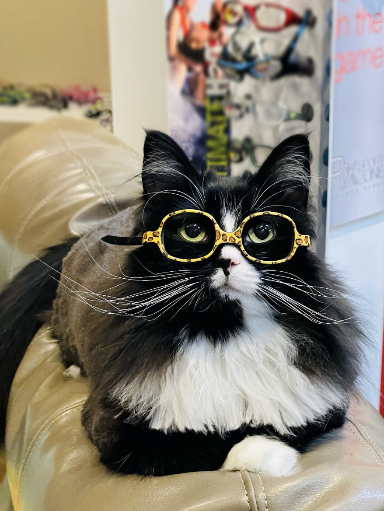

Hobbies
Contact Me
Truffles | Competative Nap Consultant

3x competative nap world champion turned coach. I possess an uncanny ability to induce and prolong states of blissful unconsciousness.
Skills
-
-
-
Education
- BS in Blanket Architecture, Minor in Snuggle Studies - Texas Christian University, 3.78 GPA (2015-2019)
- 2x College Athlete of the Year. Led varsity napping team to 3 first place NCAA titles
Experience
Consultant/Board Member for NNL (National Napping League)
Jan 2023-2024
- Maintaining order and operations ensuring the proper distribution of blankets during napping events
- Providing guidance to referees on quality of cuddles during relaxation sessions.
Head Coach - Rest Rangers
June 2021-2023
- Developed innovative techniques in the 2021 season leading 4 Rest Rangers to achieve the perfect nap in competition
- Interpreted the dreams of league members and provided expert analysis increasing team napping average by 5 points